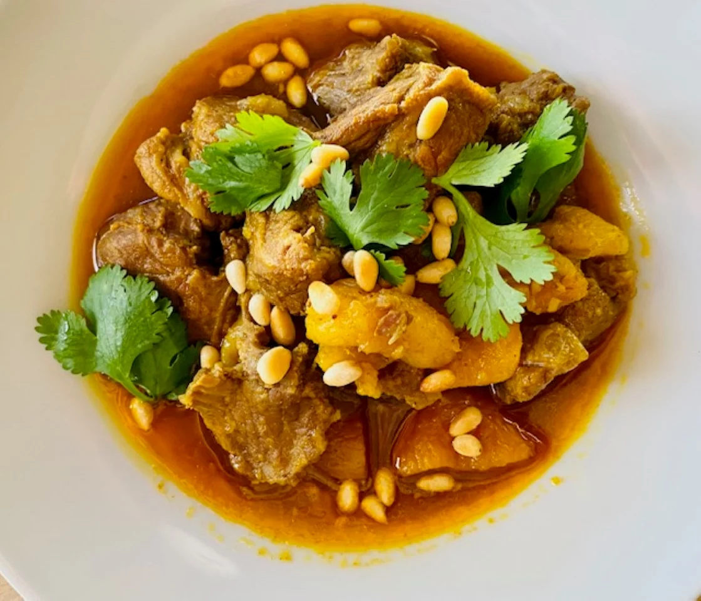

Moroccan Lamb Stew with Apricots

Description
The lamb gets mellow from cooking until tender, and the warm spices take away any overly “lamby” flavor. The
apricots, cilantro, and pine nuts are a wonderful combination. This stew took very little time or effort--very
nice for a complex-flavored dish like this. This would be great with crusty bread, served over couscous, or with
chickpeas added in for a heartier meal.
Ingredients
- 2 pounds boneless leg of lamb, cut into 1-inch cubes
- 2 teaspoons ground coriander
- 1 teaspoon ground cumin
- 1 teaspoon sweet paprika
- 1⁄2 teaspoon cayenne pepper
- 1⁄2 teaspoon ground cardamom
- 1⁄2 teaspoon ground turmeric
- 2 teaspoons kosher salt
- 2 tablespoons olive oil
- 2 cups finely chopped onion
- 4 cloves garlic, minced
- 1 tablespoon minced fresh ginger root
- 2 cinnamon sticks
- 2 cups low-sodium chicken stock
- 1 cup dried apricots, halved
- 2 orange peel strips
- 1 tablespoon honey
- 1⁄4 cup chopped fresh cilantro
- 1⁄4 cup toasted pine nuts
Steps
-
Combine lamb, coriander, cumin, paprika, cayenne, cardamom, turmeric, and salt in a large bowl; toss
together until lamb is evenly coated.
-
Heat oil in a large Dutch oven or tagine over medium heat. Add onions; cook, stirring occasionally until
soft and translucent, about 5 minutes. Stir in garlic, ginger, and cinnamon; cook, stirring frequently,
until fragrant, about 1 minute. Add seasoned lamb; cook, stirring frequently until light brown, being
careful not to caramelize, about 2 minutes. Add chicken stock and bring to a gentle boil over medium heat.
Reduce heat to low and simmer, covered, until the lamb is just tender, about 1 hour and 15 minutes.
-
Stir in apricots, orange peels, and honey; continue to simmer over low heat, uncovered, until the liquid has
thickened slightly and lamb is fork-tender, about 30 minutes. Remove from the heat, discard cinnamon sticks
and orange peels.
-
Divide evenly among 4 bowls. Garnish each bowl with a tablespoon each of cilantro and pine nuts.